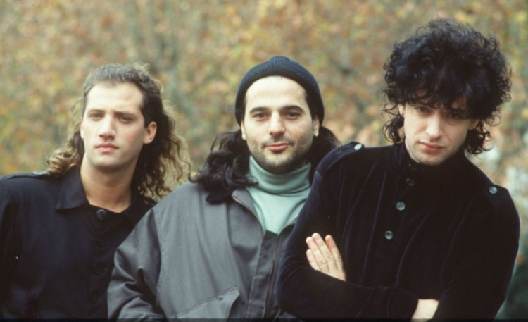
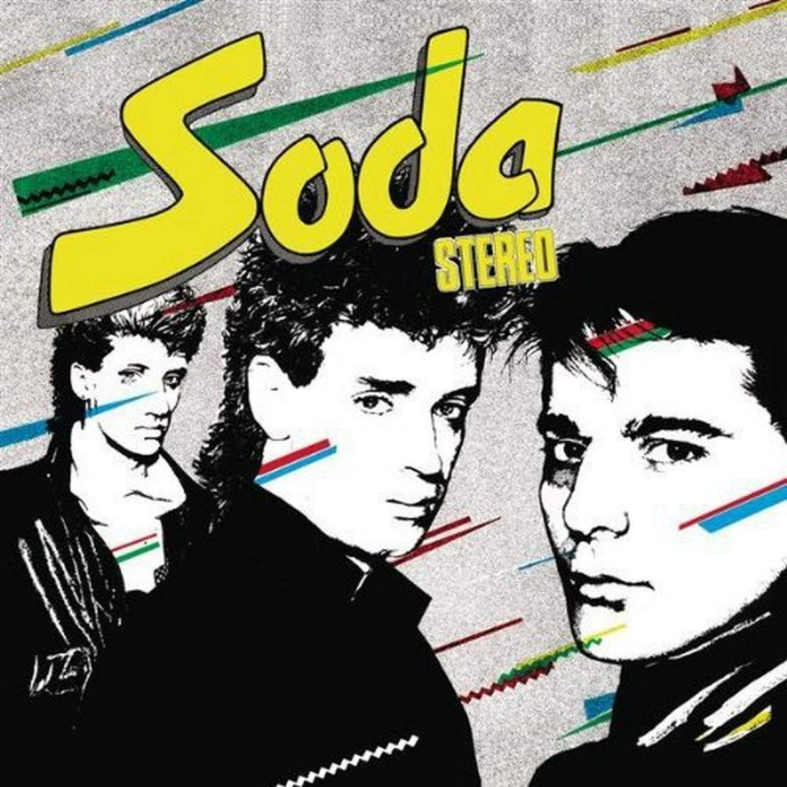
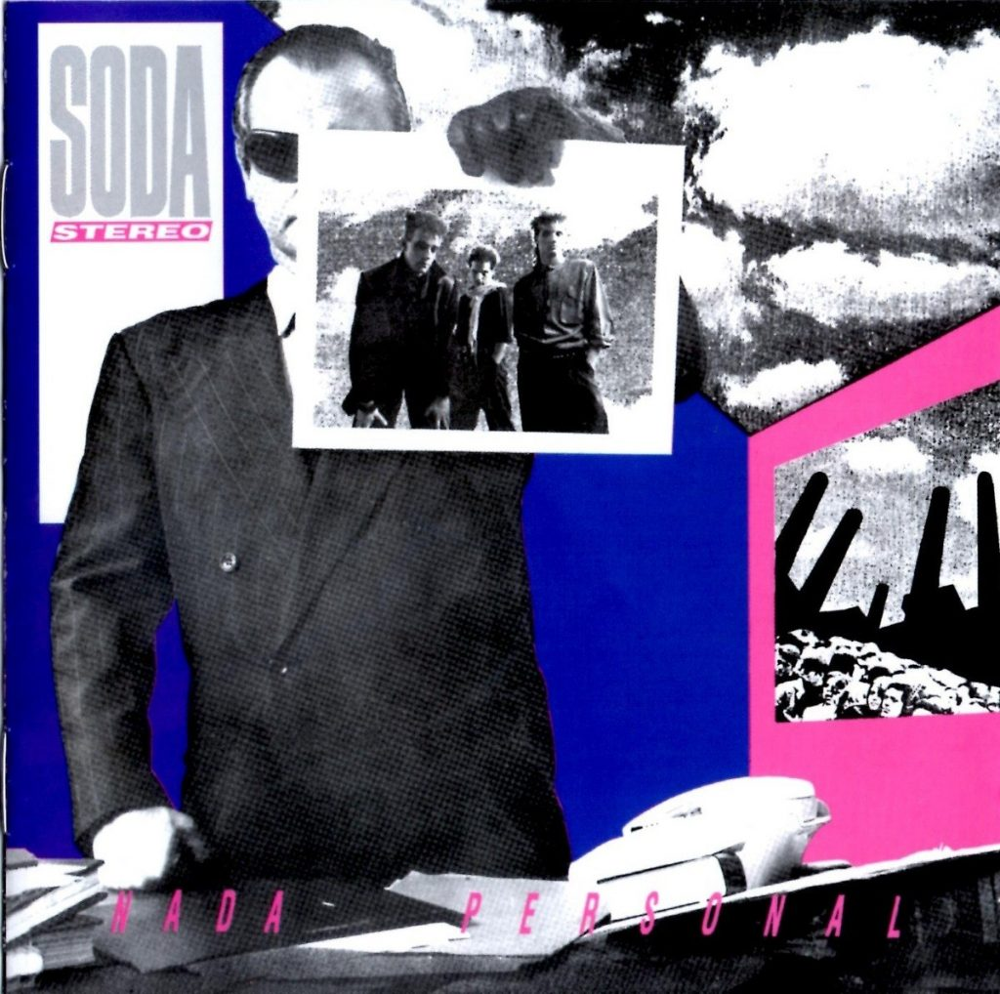
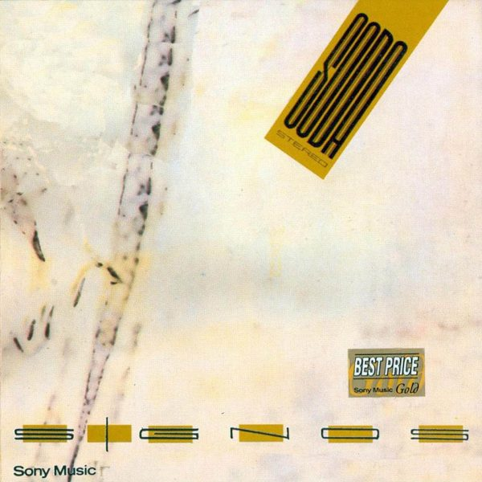
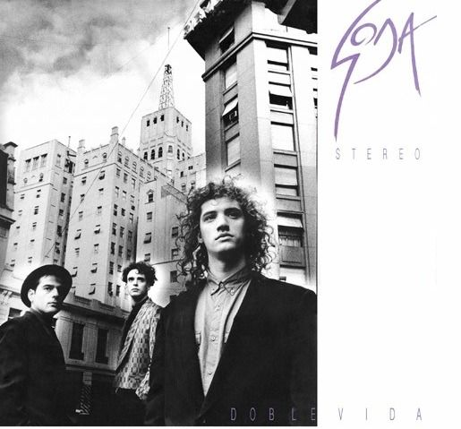
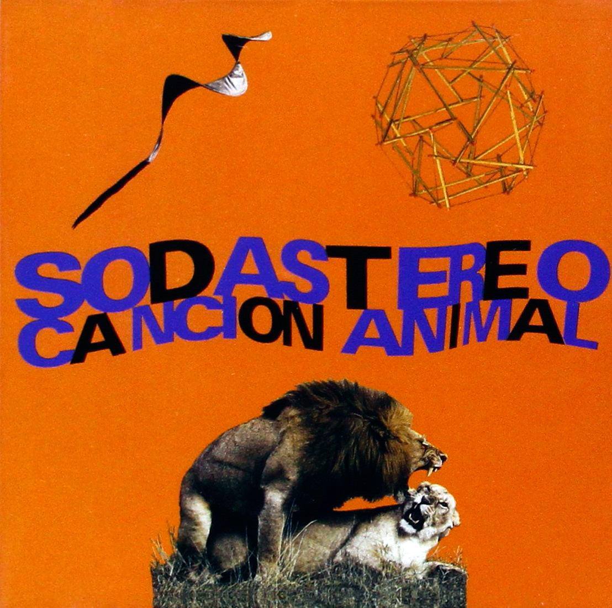
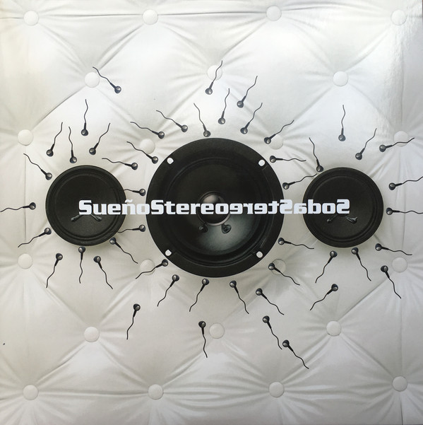

Gracias por venir
Soda Stereo
En 1982 luego de dar un show junto a Zeta Bossio, daría a luz una de las bandas más emblemáticas de nuestro país: Soda Stereo. El primer disco fue publicado dos años más tarde y llevó el nombre de la banda. En dicho álbum resaltan los sencillos "Te Hacen Falta Vitaminas", "Trátame Suavemente" y "Un misil en mi placard", pero eso sólo sería el inicio de un arduo camino. Un año más tarde saldría "Nada Personal", que significó el despegue total de la banda a nivel nacional e internacional. Con hits como "Nada Personal", "Cuando Pase el Temblor" y "Juegos de Seducción", el grupo argentino comenzó a sonar más allá de las fronteras y fue un boom prácticamente inesperado hasta para sus integrantes.
En 1986 llegaría "Signos", el tercer álbum que contó con grandes temas como "Signos", "Persiana Americana", "Prófugos" y "El Rito". Está dentro del top 3 de los mejores discos de Soda Stereo. Para 1988 "Doble Vida" marcaría un antes y un después en materia musical, ya que la banda se asentaría con un estilo más maduro y dejaría atrás esa imagen exótica que lo caracterizaba. "En la Ciudad de la Furia", "Lo que sangra (La Cúpula)" y "Corazón Delator", fueron los grandes éxitos de este cuarto material discográfico.
En la Ciudad de la Furia (En Vivo, Estadio River Plate, 2007)
Para 1990 se presentó en sociedad uno de los álbumes más conocidos a nivel internacional: "Canción Animal". Considerado uno de las joyas musicales de Latinoamérica, contiene sencillos como "Canción Animal", "De Música Ligera", "(En) El Séptimo Día", "Un Millón de Años Luz", "Cae el Sol" y "Té para Tres". La exploración de nuevos sonidos llegaría con "Dynamo" en 1992. Sería un paso hacia adelante con respecto a los discos anteriores. Aquí podemos encontrar hits del calibre de "Primavera 0", "Luna Roja", "Ameba" y "En remolinos".
1995 llegó de la mano de "Sueño Stereo", el último trabajo de estudio de la banda y que significaría el cese de la misma hasta 2007, que realizaron una serie de conciertos a modo de reencuentro con sus fans. En dicho álbum destacan obras como "Ella uso mi cabeza como un revólver", "Zoom", "Disco Eterno" y "Paseando por Roma".
Discografía 
SODA STEREO (1984)
1. ¿Por Qué No Puedo Ser del Jet Set?
2. Sobredosis de T.V. 
3. Te hacen falta Vitaminas
4. Trátame Suavemente 
5. Dietético
6. Tele-Ka
7. Ni un segundo
8. Un misil en mi placard
9. El tiempo es dinero
10. Afrodisíacos
11. Mi novia tiene bíceps
Escuchá "Soda Stereo" en Spotify
Escuchá "Soda Stereo" en YouTube Music
Escuchá "Soda Stereo" en Deezer 
Escuchá "Soda Stereo" en Apple Music 
NADA PERSONAL (1985)
1. Nada Personal
2. Si no fuera por...
3. Cuando pase el temblor
4. Danza Rota
5. El cuerpo del delito
6. Juegos de Seducción
7. Estoy azulado
8. Observándonos (Satélites)
9. Imágenes Retro
10. Ecos
Escuchá "Nada Personal" en Spotify
Escuchá "Nada Personal" en YouTube Music
Escuchá "Nada Personal" en Deezer
Escuchá "Nada Personal" en Apple Music
SIGNOS (1986)
1. Sin sobresaltos
2. El Rito
3. Prófugos
4. No Existes
5. Persiana Americana
6. En camino
7. Signos
8. Final caja negra
Escuchá "Signos" en Spotify
Escuchá "Signos" en YouTube Music
Escuchá "Signos" en Deezer
Escuchá "Signos" en Apple Music
DOBLE VIDA (1988)
1. Pícnic en el 4° B
2. En la ciudad de la furia
3. Lo que sangra (La cúpula)
4. En el borde
5. Languis
6. Día común - Doble vida
7. Corazón delator
8. El ritmo de tus ojos
9. Terapia de amor intensiva
Escuchá "Doble Vida" en Spotify
Escuchá "Doble Vida" en YouTube Music
Escuchá "Doble Vida" en Deezer
Escuchá "Doble Vida" en Apple Music
CANCIÓN ANIMAL (1990)
 1. (En) El séptimo día
2. Un millón de años luz
3. Canción animal
4. 1990
5. Sueles dejarme solo
6. De música ligera
7. Hombre al agua
8. Entre caníbales
9. Té para 3
10. Cae el sol
Escuchá "Canción Animal" en Spotify
Escuchá "Canción Animal" en YouTube Music
Escuchá "Canción Animal" en Deezer
Escuchá "Canción Animal" en Apple Music
DYNAMO (1992)

1. Secuencia inicial
2. Toma la ruta
3. En remolinos
4. Primavera 0
5. Camaleón
6. Luna roja
7. Sweet Sahumerio
8. Ameba
9. Nuestra Fe
10. Claroscuro
11. Fue
12. Texturas
Escuchá "Dynamo" en Spotify
Escuchá "Dynamo" en YouTube Music
Escuchá "Dynamo" en Deezer
Escuchá "Dynamo" en Apple Music
SUEÑO STEREO (1995)
 1. Ella usó mi cabeza como un revólver
2. Disco eterno
3. Zoom
4. Ojo de la Tormenta
5. Efecto Doppler
6. Paseando por Roma
7. Pasos
8. Ángel Eléctrico
9. Crema de Estrellas
10. Planta
11. X-Playo
12. Moiré
Escuchá "Sueño Stereo" en Spotify
Escuchá "Sueño Stereo" en YouTube Music
Escuchá "Sueño Stereo" en Deezer
Escuchá "Sueño Stereo" en Apple Music

{kind=link}
{kind=link}
{kind=link}
{kind=link}
{kind=link}
{kind=link}
{kind=link}
{kind=link}